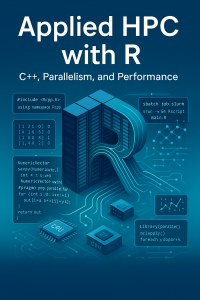

教學
我是一位敬業的教育工作者，喜歡分享知識並營造開放和包容的學習環境。我的大部分教學經驗都在數據科學、統計學和網絡科學領域。致力於開放科學，我確保所有教育內容都可以在線免費獲取。
書籍
R 應用網絡科學
本書是我多年來開發的演示、研討會和教程的集合，用於使用 R 教授網絡科學。本書主要涉及 ERGM 模型和網絡數據處理。本書完全用 quarto 編寫，使其完全可重現。
書籍網站：https://book.ggvy.cl
西班牙語版本：https://book.ggvy.cl/es
R 應用高性能計算

本書提供了如何加速 R 代碼的實用概述。本書專注於並行計算和編寫高效的 R 代碼，還介紹了如何使用 slurmR R 包在 HPC 環境中使用 R，以及通過 Rcpp 使用 C++ 的即用示例。
書籍網站：https://book-hpc.ggvy.cl
西班牙語版本：https://book-hpc.ggvy.cl/es
課程
研討會和教程
您可以在我網站的演講部分找到我的研討會和教程的完整列表。
本網站版本使用 GitHub Copilot 從原始英文版本自動翻譯，尚未經過人工驗證。